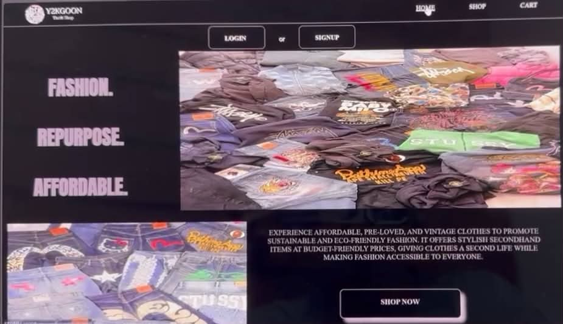
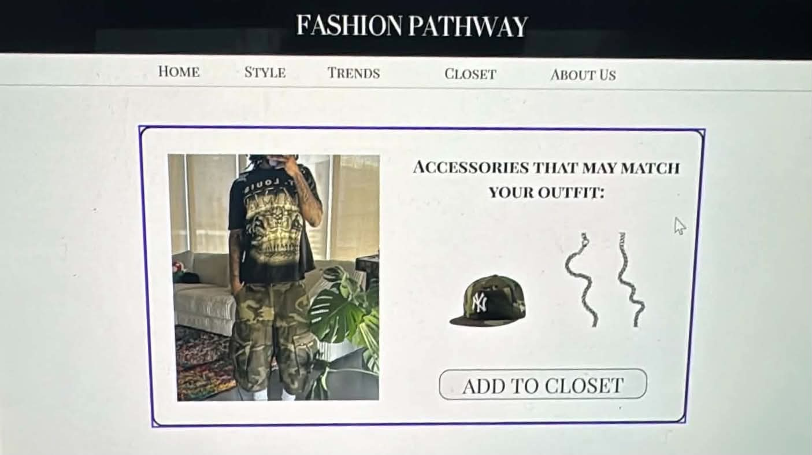

Y2KGOON E-Commerce Website
A clothing-focused website concept. I worked on the layout, navigation, product presentation, and fashion-oriented interface.
My main technical focus is programming, especially C, supported by experience creating websites and user-focused interfaces.
Built a management application using structures, functions, conditions, input handling, calculations, and file-based receipt output.
Created multi-page websites with structured HTML, CSS layouts, navigation, visual hierarchy, and responsive design.
Designed interfaces with organized sections, readable typography, consistent spacing, and clear user actions.

A clothing-focused website concept. I worked on the layout, navigation, product presentation, and fashion-oriented interface.

A fashion guide website with style, trends, closet, and about sections. The project demonstrates content organization and responsive web design.
A C programming project that manages spa services, clients, appointments, therapist assignments, payments, change, and receipt generation.